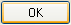
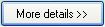

Command buttons allow users to initiate immediate actions.

The default command button is invoked when users press the Enter key. It is assigned by the developer, but any command button becomes the default when users tab to it.
While command buttons are used for immediate actions, more information might be needed to perform the action. Indicate a command that needs additional information (including confirmation) by adding an ellipsis at the end of the button label.
Proper use of ellipses is important to indicate that users can make further choices before performing the action, or even cancel the action entirely. The visual cue offered by an ellipsis allows users to explore your software without fear.
Note: When determining if a command button needs an ellipsis, don't use the need to elevate privileges as a factor. Elevation isn't information needed to perform a command (rather, it's for permission) and the need to elevate is indicated with the security shield.
For directional buttons, use double angle brackets and have it point in the direction where the action takes place. Correct:

| Button label | Meaning | Access key |
|---|---|---|
| Back | In wizards and task flows, go to the previous page. | 'B' |
| Browse... | Display a dialog box to look for a file or object. | 'B' or 'r' |
| Options | Display the choices available to users for customizing a plugin. | 'O' |
| Pause | In progress dialog boxes, suspend the task. | 'P' |
| Personalize | Customize a core experience that is crucial to the user's personal identification with a plugin. | 'P' |
| Preferences | Don't use. Use Options instead. | Not applicable. |
| Properties | Display the attributes and settings for an object. | 'P' or first 'r' |
| Save | Save a group of settings, or save a file or object using its current name. | 'S' |
| Save as... | Save a file or object using a specified name. | Second 'a' |
| Settings | Don't use. Use Options instead. | Not applicable. |
| Troubleshoot | Don't use. Use a specific Help link instead. | Not applicable. |
When referring to command buttons:
Example: Click Print to print the document.